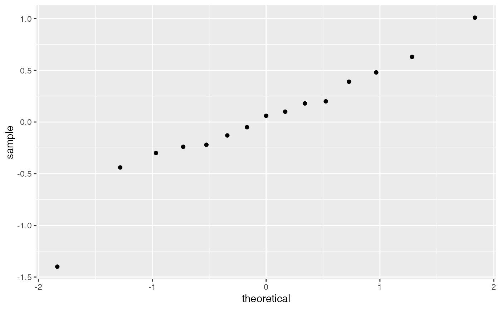

Tietjen-Moore Test for Outliers
tmTest.RdTietjen-Moore test is a function to test for k outliers in both tails.
Details
The Tietjen-Moore test is used to detect multiple outliers in a univariate data set that follows an approximately normal distribution. If testing for a single outlier, the Tietjen-Moore test is equivalent to the Grubbs' test.
Examples
x <- c(-1.40, -0.44, -0.30, -0.24, -0.22, -0.13, -0.05, 0.06, 0.10, 0.18, 0.20, 0.39, 0.48, 0.63, 1.01)
k <- 3
tmTest(data=x,k=k)

#>
#> Results of Tietjen Moore Test
#> --------------------------
#> H_0: there are no outliers in the data
#> H_a: the 3 most extreme points are outliers
#>
#> Test statistic: E_k = 0.2064704
#> Significance level: a = 0.05
#> Critical value for lower tail: 0.1857792
#> Critical region: Reject H_0 if E_k < 0.1857792